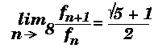

We all know the algorithm for calculating Fibonacci numbers:
int fib( int n ) {
if ( n < 2 ) return n;
else
return fib(n-1) + fib(n-2);
}
This algorithm is commonly used as an example of the elegance
of recursion as a programming technique.
However, when we examine its time complexity, we find it's
far from elegant!
Analysis
If tn is the time required to calculate
fn,
where
fn is the nth
Fibonacci number.
Then, by examining the function above, it's clear that
tn = tn-1 + tn-2
and
t1 = t2 = c,
where c is a constant.
Therefore
tn = cfn
Now,

thus
tn = O(fn) = O(1.618..n)
So this simple function will take exponential time!
As we will see in more detail later,
algorithms which run in exponential time are to be avoided at all costs!
An Iterative Solution
However, this simple alternative:
int fib( int n ) {
int k, f1, f2;
if ( n < 2 ) return n;
else {
f1 = f2 = 1;
for(k=2;k<n;k++) {
f = f1 + f2;
f2 = f1;
f1 = f;
}
return f;
}
runs in O(n) time.
This algorithm solves the problem of calculating
f0 and
f1 first,
calculates
f2 from these,
then
f3 from
f2 and
f1, and so on.
Thus, instead of dividing the large problem into two (or more)
smaller problems and solving those problems (as we did in the
divide and conquer approach),
we start with the simplest possible problems.
We solve them (usually trivially) and save these results.
These results are then used to solve slightly larger problems
which are, in turn, saved and used to solve larger problems again.
Free Lunch?
As we know, there's never one!
Dynamic problems obtain their efficiency by solving and
storing the answers to small problems.
Thus they usually trade space for increased speed.
In the Fibonacci case, the extra space is insignificant -
the two variables f1
and f2,
but in some more complex dynamic algorithms,
we'll see that the space used is significant.